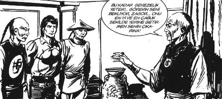

– Selamünaleyküm.
Ali Mahmut: Ve aleyküm küm küm.
– Naber çocuklar?
Musti: Ne oldu senin Genel Müdür Yardımcısı’yla görüşmen?
– Sonra anlatırım. Şahin Ağabey, bana Şenay Akbay’dan bir kargo geldi mi?
– Yoo.
Şino: Abi gördün mü Cem Yılmaz’ın reklamını?
– Evet ne biçim toplamışlar Murat 124’ü. Değme araba su dökemez eline.
Ahmedürey: Oğlum onları inekler yemiyo muydu?
Şino: O Anadol, Anadol o cahil. Ya Şef bir tanıdık buldum, 150 euroya LPG takıyor. Şehirlerarası falan rahat gidersin.
– Ağabey bozmayalım orijinalliğini aracın.
Dino: Bozsan ne olacak, altı üstü Şahin değil mi işte!
Bir anda sessizlik çığ gibi üstlerine yıkıldı. Herkes Hıdır’a, Hıdır, Deniz’e bakıyordu.
– Şahin bu oğlum, Türkiye’nin Mercedes’i, artık üretilmiyor. Elimi öpene satmam arabayı.
Ahmedürey: Abi o Mercedes olan Doğan değil miydi?
– ...
Şino: Şef bak ne göstereceğim, bugünkü gazete. Nasıl araba ama?
– Ağabey güzel, Allah sahibine bağışlasın.
– Ya Şef düşündüm taşındım, alırsın sen bu arabayı.
Ortalık yine buz kesti, herkes Hıdır’a baktı.
– Nasıl, Şahin’i mi satacam?
Şino: Abi değişiklik zamanı geldi be. Yıllardır aynı araç, aynı iş. Hem kişisel gelişim diyorsun hem Nuh Nebi’den kalma araç kullanıyorsun. Verelim beyaz Şahin’i alalım sana metalik gri bir Palio. Yenge hasta olur valla.
– Ağabey yetmez ona paramız.
– Kampanyası var oğlum. At artık şu adımı.
– Versene şu gazeteyi.
Millet oyuna daldı. Hıdırcık ilanı inceledi. Değiştirmem arabayı ama. Yıllardır aynı terane. Hanımın gözünde sıfır olduk. Hiç başarım yok. Elâlem Meganelara biniyor, daire başkanı oldu. Ben hâlâ bıraktıkları yerde otluyorum. Sonra aklına yeni okuduğu kitap geldi. Bir Dosttan Pusulalar, Anthony Robbins.
Sahte kitap satan korsanlardan almıştı, epey sayfa eksik çıktı ama. Orijinal kitaba da parası yetmiyordu. Kitabın arkasındaki yazı çarpmıştı Hıdır’ı:
“BU KİTABI OKUYUN VE KENDİNİZİ DEĞİŞTİRİN.”
İşte aradığı kitap buydu.
Ne diyordu kitabın başında: “On yıl önce Kalifornia Venice’de 37 metre karelik bir bekâr dairesinde yaşıyordum. Yalnızdım, sefildim ve 15 kilo fazlam vardı... Bir ayda 11 kilo verdim. Daha fazla olma sürecinde rüyalarımın kadınını cezbettim, onunla evlendim ve baba oldum. Harap bir apartman dairesinden, Pasifik’e bakan 930 metre karelik şatoma taşındım.”
– Ulan biz 80 metre karelik evde yaşıyoruz.
Ali Mahmut: Ne dedin abi?
– Yok bir şey.
Sonra aklına Emile Ratelband geldi, Ateş Üstünde Yürüme kitabını yazmıştı. O kitabın arkasında da “Ratelband, içinizdeki sınırsız gücü keşfetmeniz için yazdı” diyordu.
135. sayfada: “Arnheim yakınlarında bir evi kiraladım. O anda bu evi bir gün satın alacağımı biliyordum. Bu evin benim olacağı bilgisi ve zihin haliyle yeni bir bahçe düzenlemeye başladım. Bir havuz yaptırdım ve evi tümüyle yeniledim. Bu evin benim olduğunu hissediyordum. Ev sahibine evi satın alma niyetimi açtım fakat ödeyemeyeceğim bir fiyat söyledi. Beş yıl sonra ev sahibi Brüksel’de bir ev almak istedi. Fakat ancak bu evden kurtulursa bunu yapabilecekti, böylece evi ucuza aldım. Bu bir kez daha istediğinizi elde edebileceğinizi kanıtlıyor. Ancak düşünüze inanırsanız.”
Adamın kitaptaki resmi aklına gelince, yüzünde pek de meymenet olmadığını fark etti.
– Vay leş kargası!
Ali Mahmut: Ne dedin abi?
– Yok bir şey.
Ali Mahmut: Abi adamın arabasının lastiği patlamış, feci de yağmur var, lastiği değiştirirken, yağmur dört tane bijonu mazgaldan içeri düşürmüş.
Bizimki yağmurun altında elinde bir lastik, çaresiz kalakalmış. O sırada bir camdan beyaz gömlekli bir adam bağırmış.
– Geçmiş olsun.
– Sağ ol.
– Çaresiz görünüyorsun!
– Evet, lastiği takamıyorum yolda kaldım.
– Diğer lastiklerden birer bijon söksen ve üç bijonu kullansan. Her lastiğinde bir bijon eksik gideceğin yere kadar seni idare eder.
Adam bu müthiş fikir karşısında şok olmuş, hemen işlemi yapmış. Teşekkür etmek için başını kaldırmış bir bakmış, adamın seslendiği binada “Tımarhane” yazıyor.
– Ya birader senin gibi akıllı bir adam, tımarhanede ne arıyor? diye sormuş.
Deli: Birader biz salaklıktan yatmıyoruz, delilikten yatıyoruz (!) demiş.
Kahkahalar...
– Eee?
Ali Mahmut: Abi salak muamelesi yapıp durma; dışından bir şey diyorsun, sonra demedim diyorsun.
– Ya bu diyaframı kullanınca sesim biraz...
Musti: Taktın oğlum sen bu kişisel gelişime, saçını bile ters tarıyorsun, eski hâli daha iyiydi be.
Hıdır resme odaklandı. Zihninde arabayı canlandırdı. Araba onunmuş gibi düşündü. Üzerinde süpermen kıyafeti. Palio... Yenge kolunun altında, hayran ona bakıyor. Nisan arka koltukta. Memlekete yola çıkacaklar.
O sırada yan sayfadaki ilanı gördü.
“Ne aileniz ne işiniz kim olduğunuzu göstermez. Sadece saatiniz kim olduğunuzu gösterir.” Seiko.
Kendi saatine baktı. 1974 yılında İzmir’deki sünnetinde taktıkları Hislon marka saat “18 Rubis”, sünnet saati, Cemil Eniştesi takmıştı.
– Lan bu saatle nereye yükseliyon!
Ali Mahmut: Abi şu diyafram işini bıraksan artık, bütün kahve sana bakıyor.
Çıkışta hepsi, gürzlü, kılıçlı garip tipli adamların resminin altında asılı kutudan Kahveci Şahin İpek’in hazırlayıp fotokopiyle çoğalttığı günün hikâyesini aldılar. Resimler tarih öncesi yaratıklara benziyordu. Hecüc Mecüc gibi şeyler.
GÜNÜN HİKÂYESİ
Yusuf El Fahri bir gün her şeyi terk edip Kuzey Lübnan’daki Kadisa Vadisi’nin yamacında bir mağaraya çekildi.
Yakınları dâhil kimse derdini anlayamadı. Köylüleri sonu acıklı bir aşka dair dedikodular üretti. Kimisi “Delirdi” dedi. Birkaç kişi de “O dünyayı değil, imanın yolunu seçti” diye yorumladı.
Yeni yetmelik çağındaki Cibran bunu kafaya takmıştı. Çünkü Yusuf El Fahri’nin sırları olduğuna inanıyordu.
Bir iki kez vadideki sedir ormanının ötesindeki mağaralara gidip adama yakınlaştı. Hiddetli bakışlar ve kaba sözlerden başkasını elde edemedi. Hayal kırıklığı yaşadı.
İki yıl geçmişti ki El Fahri’nin inziva hücresinin bulunduğu yerlerde dolaşırken çöl fırtınasına yakalandı.
“Böyle bir hâlde karşınıza çıktığım için beni hoşgörün ama fırtına...” diye söze girmişken El Fahri somurtarak süzdü onu. “Bu bölgede mağara çoktur, onlara da sığınabilirdin” dedi. Ama bunu söylerken elindeki kuşun kafasını görülmemiş bir yumuşaklıkla okşuyordu.
Uzun öykünün kısası, karşılıklı olarak birbirlerini sözlerle tarttılar. Sonunda genci bir geceliğine misafir etti El Fahri; üzerine hırka, örtü verdi.
Akşam yemeği vakti kalkıp içi şarap dolu bir testi, ekmek, peynir, zeytin, bal, kuru meyve çıkardı. Sessizce yediler. Üzerine nefis kokulu kahve içtiler.
Sonunda Cibran’ın aklından geçenleri okur gibi konuşmaya başladı El Fahri:
“Bu hücrede şarabın, balın, kahvenin bulunmasına şaşıyorsun değil mi?”
Cibran yanıtladı: “Allah’a kulluk etmek için dünyadaki tüm lezzetlerin ve mutlulukların terk edildiğine inanmaya alışmıştık efendim!”
Bunun üzerine Yusuf El Fahri şöyle devam etti:
“Ben dünyayı Allah’ı bulmak için terk etmedim. Onu evimde ve her yerde bulmaktaydım. Ben insanları terk ettim. Çünkü ahlakım ahlaklarıyla, düşlerim düşleriyle uyuşmuyordu.
Şehirleri terk ettim. Çünkü artık şehirlerin kökleri yerin derinlerinde, dalları bulutların üstündeydi; ama hırs ve kötülük çiçekleri açan, keder ve kaygı meyveleri veren yaşlı bir ağaç gibiydiler.”
Sonra sesini daha da yükselterek dedi ki:
“Yalnızlığı kardeşim; dua ve zahitlik için seçmedim. Çünkü dua kalbin şarkısıdır ve her yerden Allah’a ulaşır. Hayır. Yalnızlığı, değer ve onur bakımından alçakça şeyleri satın alabilsin diye ruhlarını satan adamların yüzlerini görmemek için istedim...
Yalnızlığı istedim. Çünkü nezaketi zayıflığın bir parçası, hoşgörüyü ödleklik, yücelmeyi böbürlenme fırsatı kabul eden kalabalığın terbiyesizliğinden usandım.”
Ve daha ne çok anlattı Yusuf El Fahri...
Doğulusuyla, Batılısıyla halkların aslında nasıl birbirine benzediğini, farkların kurtla sırtlan arasındaki kadar olduğunu; bilimler ve sanatların bile nasıl esaret zincirleri olup çıkabileceğini anlattı.
Sonra durup “Bir şeyin dışında hiçbir şey yoktur” dedi.
Heyecanlandı Cibran. Soluk soluğa “Nedir o?” diye sordu.
Yusuf El Fahri işte o zaman ellerini göğsüne koyup ışıldamaya başlayan çehresiyle “ruhtaki derin uyanıklık” dedi.
“O, ben ailemin, dostlarımın, toplumun ortasındayken gözlerimdeki perdeyi indiren eldir ki bu yüzler de neyin nesi, bunlar kim diyerek kalakalmışımdır.
Onu tanıyan sözle anlatamaz; tanımamış olansa asla sırlarını kavrayamaz.”
Halil Cibran
Kaveci Şahin İpek
Orijinal kitaptan aldım arkadaşlar.
Orada, az önce tanıklık ettiğim şeyin şoku ile felç olmuş öylece duruyordum. Büyük Julian Mantle bir kurbana indirgenmişti ve şimdi çaresiz bebek gibi yerde kıvranıyor, [...] titriyor ve terliyordu.[11]
